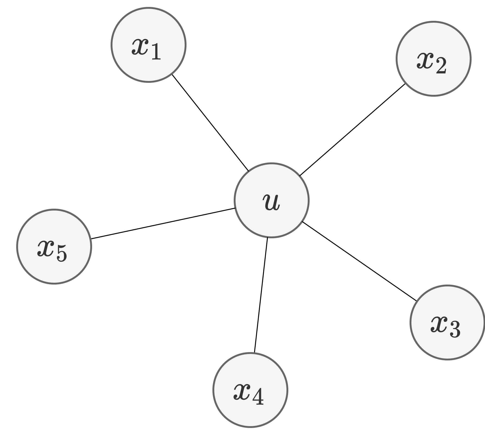
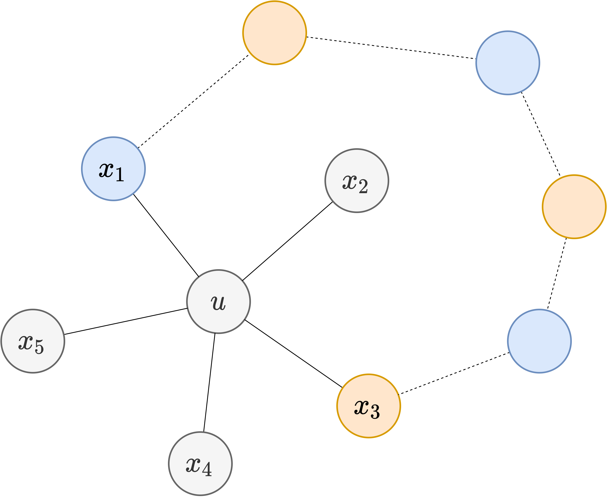

⚠ 转载请注明出处：作者：ZobinHuang，更新日期：May.9 2022

本作品由 ZobinHuang 采用 知识共享署名-非商业性使用-禁止演绎 4.0 国际许可协议 进行许可，在进行使用或分享前请查看权限要求。若发现侵权行为，会采取法律手段维护作者正当合法权益，谢谢配合。
目录
有特定需要的内容直接跳转到相关章节查看即可。
点着色的概念
问题引入
考虑这样一个问题: 某大学数学系要为这个夏季安排课程表，所要开设的课程为: 图论(GT), 统计学(S), 线性代数(LA), 高 等微积分(AC), 几何学(G), 和近世代数(MA)。现有 10 名学生 (如下所示) 需要选修这些课程。根据这些信息，确定开设这些课程所需要的最少时间段数，使得学生选课不会发生冲突 (学生用 `A_i` 表示）。
| 学生 | 选课 |
|---|---|
| `A_1` | LA, S |
| `A_2` | MA, LA, G |
| `A_3` | MA, G, LA |
| `A_4` | G, LA, AC |
| `A_5` | AC, LA, S |
| `A_6` | G, AC |
| `A_7` | GT, MA, LA |
| `A_8` | LA, GT, S |
| `A_9` | AC, S, LA |
| `A_{10}` | GT, S |
假如我们把课程转化为图 `G` 的顶点，两顶点连线当且仅当有某个学生同时选了这两门课程，如下图所示:
如果我们用同一颜色给冲突的课程所代表顶点染不同色, 那么问题转化为在图中求所谓
相关概念定义
设 `G` 是一个图，对 `G` 的每个顶点着色，使得相邻顶点着不同颜色，称为对 `G` 的
如果用 `k` 种颜色可以对 `G` 进行正常点着色，称 `G`
对图 `G` 正常顶点着色需要的最少颜色数，称为图 `G` 的
图的点色数的几个结论
显然 `\chi(G) \le n`，且仅对 `K_n` 有 `\chi(K_n)=cl(K_n)=n`，其中 `cl(K_n)` 指的是 `K_n` 的最大团的阶数。
下面我们给出图的点色数的几个结论。
证明:
事实上，由定理结论容易想到，因为任意一个顶点度数至多为 `\Delta`。因此，正常着色过程中，其邻点最多用去 `\Delta` 种颜色。所以，至少还有一种色可供该点正常着色使用。
下面我们给出严格证明。我们对顶点数作数学归纳证明：
当 `n=1` 时，结论显然成立。
设对顶点数少于 `n` 的图来说，定理结论成立。考虑一般的 `n` 阶图 `G`。
任取 `v \in V(G)`，令 `G_1=G−v`，由归纳假设可得:
设 `\pi` 是 `G_1` 的一种 `\Delta(G)+1` 正常点着色方案，因为 `v` 的邻点在 `\pi` 下至多用去 `\Delta(G)` 种色，所以给 `v` 染上其邻点没有用过的色，就把 `\pi` 扩充成了 `G` 的 `\Delta(G)+1` 的着色方案。
对于 `G` 来说，可以给出其 `\Delta(G)+1` 正常点着色算法。
下面我们给出图 `G` 的 `\Delta(G)+1` 的正常点着色算法。设 `G=(V,E)`，`V={v_1, v_2, …, v_n}`，色集合`C={1, 2, …, \Delta+1}`，着色方案为 `\pi`。
- 令 `\pi(v_1)=1, i=1`；
- 若 `i=n`，则停止; 否则若 `k` 为与 `v_{i+1}` 相邻的顶点里未使用的标号最小的色号，则令 `\pi(v_{i+1})=k`；
- 令 `i=i+1`，转 (2)
值得注意的是，虽然上述算法能够完成对图 `G` 的正常点着色，但是不能够求出来图 `G` 的点色数。
下面给出
四色定理与五色定理
四色定理
四色定理曾经是著名的数学猜想，在上个世纪七十年代被使用计算机方法予以了证明。详细的四色定理的发展历史可参考 4_color_wiki。
五色定理
下面给出五色定理。
证明:
我们对图的顶点数进行归纳。当 `n=1` 时，结论显然。
假设当 `n=k` 时结论成立，考虑当 `n=k+1` 时的连通平面图 `G`。
因为图 `G` 是连通平面图，所以 `\delta(G) \le 5`。设最小度点 `d(u) = \delta(G) \le 5`，令 `G_1 = G-u`，由归纳假设可得，`G_1` 是 `5`-可顶点正常着色的。设 `\pi` 是 `G_1` 的 `5` 着色方案。
(1) 如果 `d(u) = \delta(G) < 5`，显然 `\pi` 可以扩充为 `G` 的 `5` 正常顶点着色，`u` 只要使用其不超过 `4` 个的邻居没有使用的颜色即可。
(2) 如果 `d(u) = \delta(G) = 5`，则需要分两种情况进行讨论。
-
在 `\pi` 下，如果 `u` 的邻接点中，至少有两个顶点着相同颜色，则容易知道，`\pi` 可以扩充为 `G` 的 `5`-正常顶点着色;
-
在 `\pi` 下，设 `u` 的邻接点中，5 个顶点着了 5 种不同颜色:
不失一般性，设 `\pi(x_i)=i (1 \le i \le 5)`。设 `H(i,j)` 表示着 `i` 和 `j` 色的点在 `G_1` 中的导出子图:
- 如果 `x_1` 与 `x_3` 属于 `H(1,3)` 的不同分支，也即 `x_1` 和 `x_3` 之间不存在只由 `1` 和 `3` 着色的点构成的路，则通过交换含 `x_1` 的分支中的着色顺序，可以得到 `G_1` 的新正常点着色方案，使得 `x_1` 和 `x_3` 着同色，于是由情形 1，可以得到 `G` 的 `5`-正常顶点着色方案。
-
如果 `x_1` 和 `x_3` 属于同一个分支，否则将会得到 `H(1,3)` 和 `H(2,4)` 的交点，不满足平面图的定义。因此，基于上面的结论，`\pi` 可以扩充为 `G` 的 `5` 正常顶点着色。

顶点着色的应用
图的正常顶点着色对应的实际问题是 "划分" 问题。
排课问题
回到我们在 class_problem 中提到的问题，现在让我们使用点着色的分析角度来重新看待它。
首先，由于图中含有奇圈，所以它的点色数起码为 `3`。
然后，由于点 `LA` 与奇圈上的每一个点均邻接，因此点色数至少为 `4`。
最终通过着色我们发现图 `G` 的点色数确实为 4。